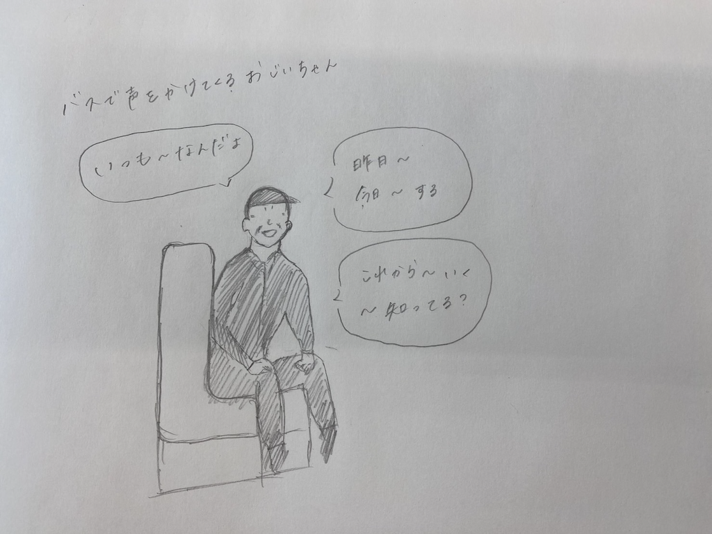

私たちの班で取り組むことにした問題
1.急に話してくるおじいちゃん
話し相手が欲しいのか、誰にでも今日の予定やどこにいくのかなどを話しかけてくるおじいちゃん
⇩同じ班の矢嶋さんが描いたスケッチ

⇩作成したPOV

2.直進してくる人
人がいっぱいいる場所なのに人をよけようとしないで、直進してくる人
⇩スケッチ
⇩作成したPOV

私たちの班では班の中でで分担し、それぞれの問題を解決することができる作品を制作することにしました。
そして私は二つの問題を解決することができる缶バッチを作りました。
実際に作った製品
1.
作品の説明
この作品は直進する人側の気持ちになって考えた作品であり、直進したいという意志が周りの人に伝わる作品になっていて、缶バッチになっているため鞄や服につけることができます。 またこの缶バッチは道路標識をイメージしていて、誰が見ても、どの国の人が見てもわかりやすい「ユニバーサルデザイン」になっています。
使用機材
・UVプリンター ・缶バッチ（100円ショップで購入）